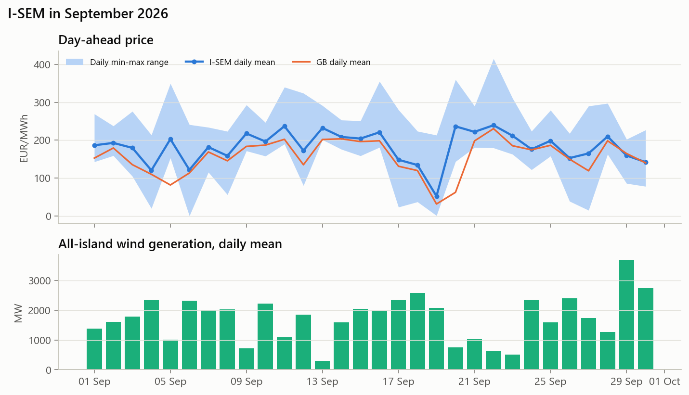

Day-ahead market (DAM). For commercial and finance colleagues. Data to 30 September 2026.

| September 2026 | August 2026 | September 2025 | |
|---|---|---|---|
| Mean DAM price (EUR/MWh) | 182.7 | 171.0 | 94.3 |
| GB day-ahead mean (EUR/MWh) | 156.2 | 149.4 | 76.8 |
| Weekday evening peak, 17:00-20:00 (EUR/MWh) | 235.8 | 206.6 | 144.2 |
| Median daily spread (EUR/MWh) | 149 | 89 | 114 |
| All-island wind, mean (MW) | 1,707 | 836 | 1,541 |
| ROI wind penetration | 35% | 18% | 34% |
| ROI load, mean (MW) | 3,959 | 3,779 | 3,749 |
| Hours at or below 5 EUR/MWh | 13 | 0 | 29 |
Wind. The wind-weighted (capture) price was 166 EUR/MWh, a capture rate of 91% of the baseload average (August: 96%). Revenue per MWh was high in absolute terms, but the discount to baseload widened. When the whole fleet is generating, the price falls (the cannibalisation effect). The capture rate is structurally lower in windy months, and averaged 85% over the test year.
Battery (1 MW / 2 MWh, DAM arbitrage only). This was the #2 month of the test year for the forecast-driven strategy, at EUR 5.3k per MW. Perfect foresight would have earned EUR 6.7k, and a fixed charge/discharge schedule only EUR 2.0k. The fixed rule failed because the daily price shape moved away from last year's pattern.
Forecasting. This was our day-ahead price model's worst month (MAE 46 EUR/MWh, against 25 for the year). Most of the error was the level: the model lagged the gas-driven rise. The shape stayed right, which is what the battery needs, so battery revenue held up. Adding a gas-price input is the top model improvement.
Source: our analysis of Ember/SEMOpx DAM prices, Energy-Charts (ENTSO-E) wind and load, and Open-Meteo forecasts. DAM only. Battery figures exclude system services, capacity and balancing revenue. The full methodology is in the project README.